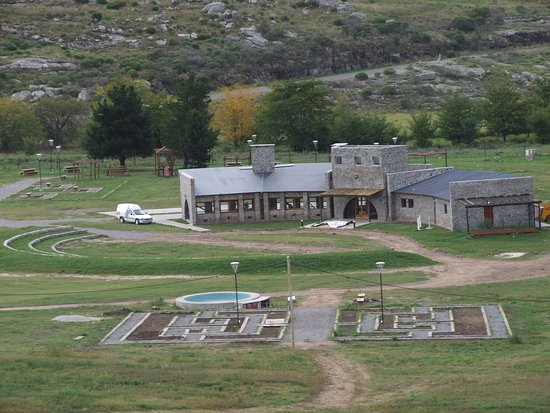
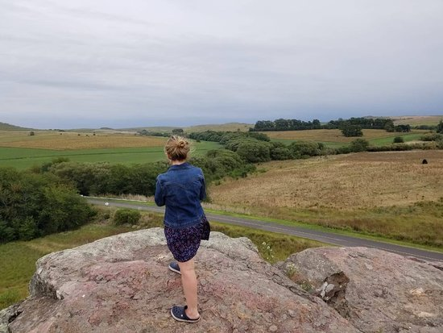
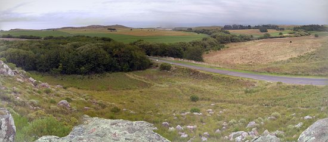
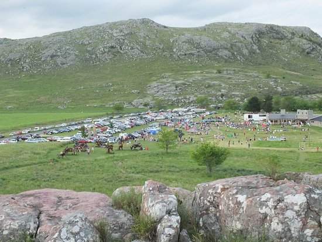

De la laguna al fuego. Pesca y cocina en toda la Provincia de Buenos Aires
Ver Spots de PescaVisitamos lagunas, arroyos, ríos y costa marítima de Buenos Aires. Te mostramos los mejores puntos y piques.
Cocinamos el pescado que sacamos. Recetas según la especie y su proveniencia. Del río directo a la parrilla.
Ubicación real de cada spot. Con Google Maps para que vayas a pescar vos también.
Lagunas, arroyos, ríos y costa. Todos geolocalizados
Tip: Hacé clic en cada marcador para ver especie y pique
🗺️ Abrir Mapa Completo en Google MapsRecetas sacadas del agua y directo a tu parrilla

Laguna Chis Chis
Clásico crocante por fuera, jugoso por dentro. Con papas rústicas y chimichurri de río.
📄 Ver Receta Completa
Costa Mar del Plata
Entera a las brasas con sal gruesa. Acompañada de ensalada criolla y vino blanco bien frío.
📄 Ver Receta Completa
Arroyo Azul
Calentito para el frío. Con verduras de huerta, pimentón ahumado y mucho amor de campamento.
📄 Ver Receta Completa+ Receta: Peje frito al limón
+ Receta: Corvina a la parrilla
+ Receta: Guiso de pescado




Suscribite a YouTube y seguí todos los programas
IR AL CANAL